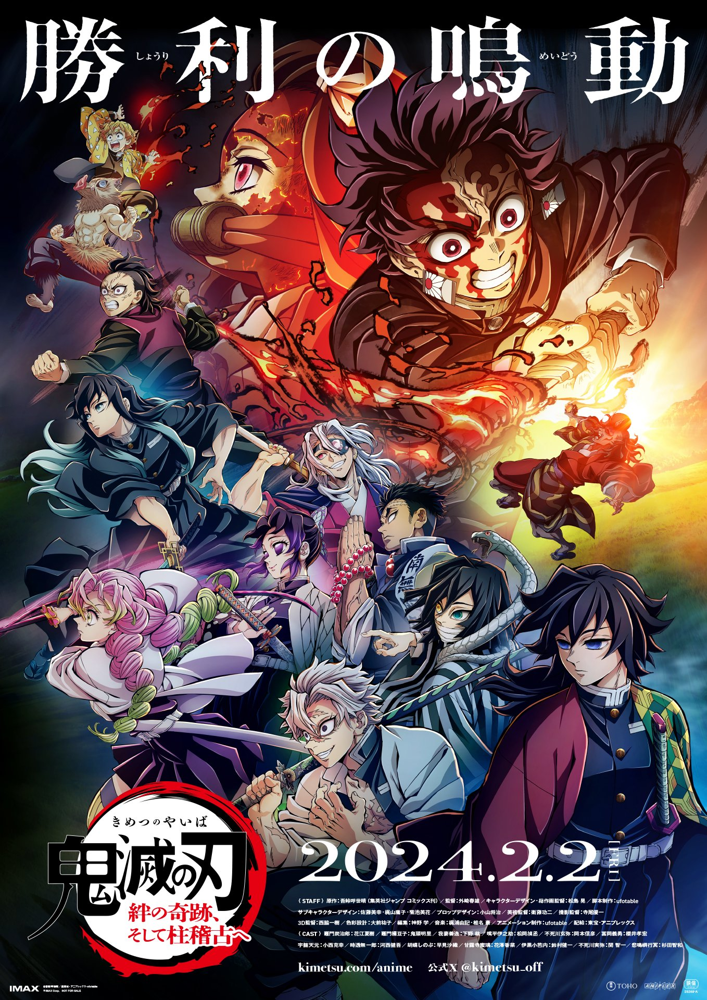
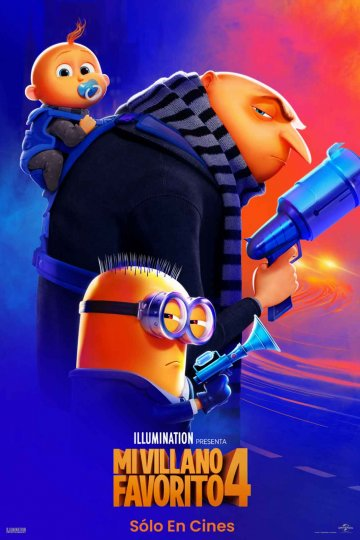

SINOPSIS En la provocadora comedia, Con Todos Menos Contigo, Bea (Sydney Sweeney) y Ben (Glen Powell) parecen la pareja perfecta, pero después de una increíble primera cita algo sucede que vuelve su candente relación en algo congelado; hasta que sorpresivamente se encuentran en una boda en Australia. Así que hacen lo que dos adultos maduros harían: pretender que son una pareja.
ACTORES: Alexandra Shipp, Glen Powell, Darren Barnet, Sydney Sweeney
DIRECTORES:
Will Gluck
SINOPSIS
Demon Slayer: Kimetsu no Yaiba -To the Hashira Training- proyectará por primera vez en cines el episodio 11 del Arco de la Aldea de los Herreros, mostrando así la conclusión de la feroz batalla entre Tanjiro y la Cuarta Luna Creciente, Hatengu, además de cómo Nezuko logra caminar bajo el sol. Le seguirá el episodio 1 del Arco del Entrenamiento de los Pilares, donde veremos el inicio del entrenamiento de los Pilares para prepararse de cara a la próxima batalla contra Muzan Kibutsuji, que se podrá ver por primera vez.
CREDITOS Y REPARTO
ACTORES: Natsuki Hanae , Akari Kito, Hiro Shimono, Kengo Kawanishi
DIRECTORES: Haruo Sotozak
SINOPSIS
la película retoma la historia de Gru, quien “le da la bienvenida a un nuevo miembro de la familia, Gru Jr., que tiene la intención de atormentar a su padre.
CREDITOS Y REPARTO
ACTORES: Steve Carell Kristen Wiig
DIRECTORES: Chris Renaud